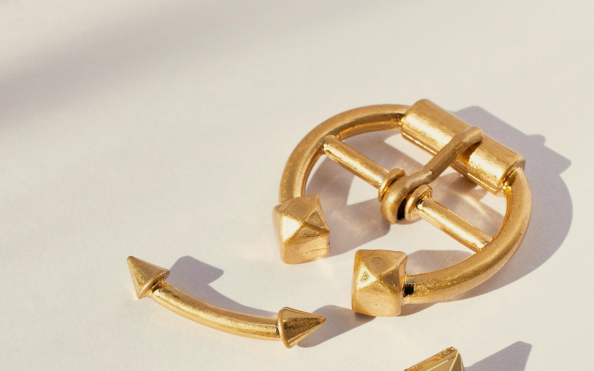
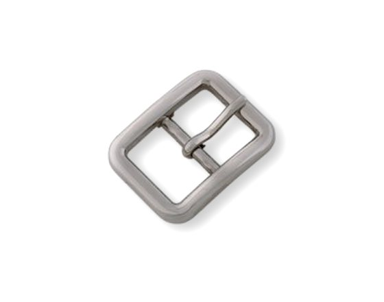
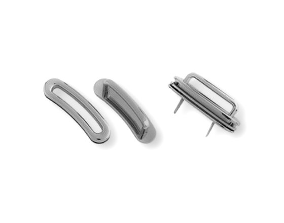
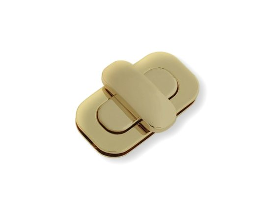
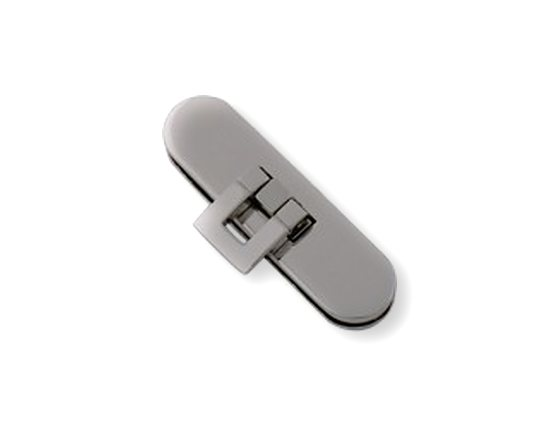
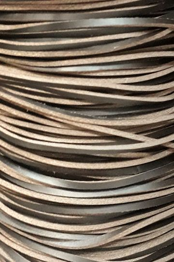
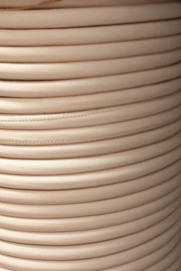
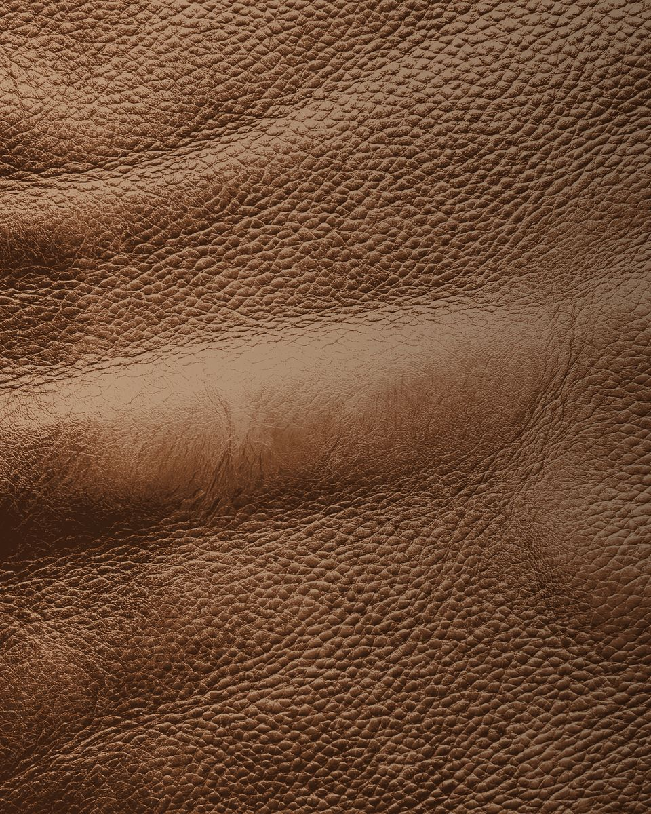
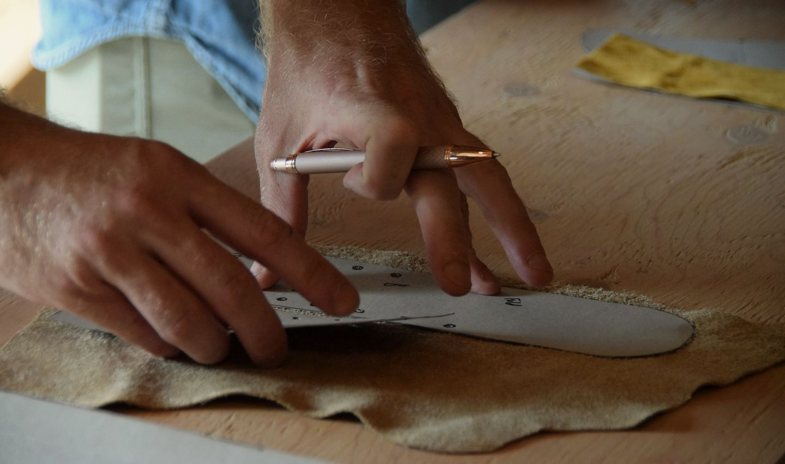

Fibbie, lacci e rinforzi
Minuteria in zama, ferro e ottone, lacci in pelle da mm2 a mm60, nastri, fodere e rinforzi per borse, cinture, calzature e capi. Da Vigonovo, Venezia.
Scala 1:1Righello in millimetri. In cuoio le misure a catalogo: lacci e tondini da 2 a 4, tubolari fino a 16, nastri da 20 a 50, strisce e fibbie fino a 60.
Tav. 1Fibbia ad ardiglione con borchie a piramide, finitura oro.
Lacci e nastri in scala 1:1
Scegli il materiale e la misura: la striscia qui sotto prende la larghezza vera. Il laccio in pelle lo facciamo tubolare, piatto, cucito o a taglio vivo, e su richiesta anche a campione.
mm30
Striscia in pelle a taglio vivo, da mm2 a mm60
Nastri in cotone e poliestere per tracolle e cinture: mm20, 25, 30, 40 e 50.
La misura non torna? Tara lo schermo
Minuteria metallica
Undici famiglie dal cassetto, in zama, ferro e ottone. Su ordinazione si possono avere varie finiture; qui c'è solo una parte di quello che è disponibile.
Moschettoni

Anello tondo
Zama

Anello ovale
Zama, ferro, ottone

Anello rettangolare
Zama
Anelli e fibbie

Mezzi anelli
Ferro, zama

Anelli tondi e rettangolari
Varie forme e materiali

Fibbie doppie
Anche per calzature
Attacchi

Con spinetta
Zama

Con alette
Zama
Chiusure

A pulsante
Zama

A girello
Zama

A battente
Zama
Fuori dal cassetto
- Cerniere dorate o nichelate
- Scheletri, salpe e rinforzi per borse
- Fodere tinta unita e stampate
- Nappe e vitelli lavabili, sp. 0,7 e 1,1
- Accessori in legno e bambù, in plastica e metallo nichel free, con strass


Ricoperte con il vostro materiale
Fibbie e bottoni rivestiti in pelle o in tessuto, anche con quello che ci mandate.

Nel laboratorio ricopriamo fibbie e bottoni con il tessuto o la pelle che ci mandate. Sulla pelle facciamo anche lavorazioni particolari, dal camouflage al floreale alla stampa cocco.
- Fibbie da ricoprire
- mm40, mm50, mm60
- Bottoni
- Yvette, a pressione e altri da ricoprire
- Rivestimento
- tessuto o pelle, anche vostri
- Lavorazioni sulla pelle
- camouflage, floreale, stampa cocco
Semilavorati in pelle e tessuto
In laboratorio facciamo componenti semilavorati in pelle e tessuto. Se un articolo non c'è, lo creiamo su vostra richiesta.

Per chi fa borse, scarpe e capi
Le misure a catalogo, settore per settore. Ogni quota è in scala reale sullo stesso righello da 0 a 60 mm.
Pelletteria
- Nastri per tracolla e cinture, cotone e poliestere20, 25, 30, 40, 50
- Laccio tubolare in pelleda 2 a 16
- Laccio in cuoio a taglio vivo4
E poi nastro intrecciato, scheletri, salpe e rinforzi.
Calzatura
- Laccio tubolare: corda cerata, elastico, pelle2, 3, 4
- Tondino in pelleda 2 a 3,5
- Rivetti00, 033, 034, 036
E poi occhielli piatti e bombati, lampo in plastica e metallo, fibbie doppie.
Abbigliamento
- Strisce in pelle a taglio vivoda 2 a 60
- Cordoncino in poliestere3, 4
- Tondino in pelle2, 3
- Alcantara, vari colorih. 1,40
E poi corda juta.
1979Giorgio Gastaldello, nella pelletteria dal 1979
Hambro nasce da un'idea di Giorgio Gastaldello: interni, rinforzi e minuteria per chi produce borse, cinture, calzature e abbigliamento.
Per ordini e campioni
Sul sito c'è solo una parte di quello che è disponibile: il resto si chiede al telefono o per posta.
Laccio tubolare
in pelle, mm 3
HAMBRO
- Telefono
- 049 980 2326
- Indirizzo
- via dell'Artigianato, 30
30030 Vigonovo (Venezia)
Apri la mappa - Orari
- Lunedì a giovedì8:00-12:00 e 13:30-17:30Venerdì8:00-12:00Sabato e domenicachiuso